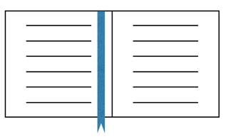
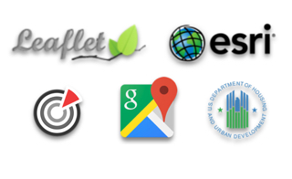

Code Examples
Jump straight to code examples and begin integrating into your own applications.

Gallery
Browse integrations from Census, HUD, USDA, Google, Leaflet JS, Microsoft, Socrata, ESRI, and more.